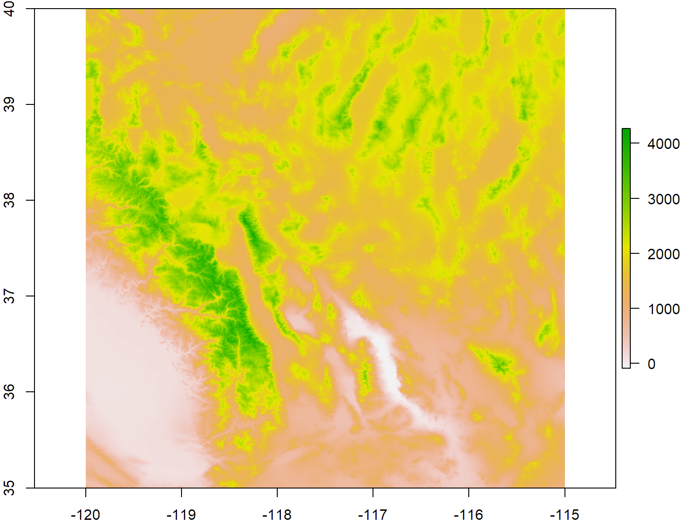
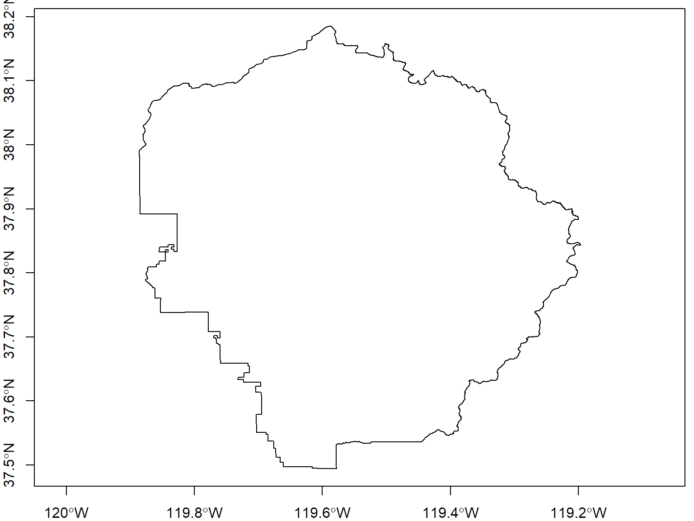
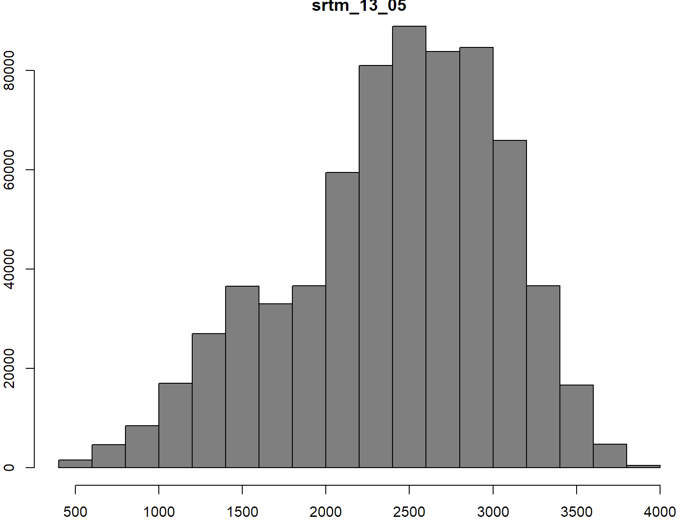

Import a GeoTiff
Get the filename for a sample tif file
rgdal_dir <- system.file("pictures", package="rgdal")
cea_fn <- file.path(rgdal_dir, "cea.tif")
cea_fn
## [1] "C:/Users/Andy/Documents/R/win-library/3.4/rgdal/pictures/cea.tif"
## [1] TRUE
## Warning: statistics not supported by this driver
## rows 515
## columns 514
## bands 1
## lower left origin.x -28493.17
## lower left origin.y 4224973
## res.x 60.02214
## res.y 60.02214
## ysign -1
## oblique.x 0
## oblique.y 0
## driver GTiff
## projection +proj=cea +lon_0=-117.333333333333 +lat_ts=33.75 +x_0=0 +y_0=0
## +datum=NAD27 +units=m +no_defs
## file C:/Users/Andy/Documents/R/win-library/3.4/rgdal/pictures/cea.tif
## apparent band summary:
## GDType hasNoDataValue NoDataValue blockSize1 blockSize2
## 1 Byte FALSE 0 15 514
## apparent band statistics:
## Bmin Bmax Bmean Bsd
## 1 0 255 NA NA
## Metadata:
## AREA_OR_POINT=Area
Import the GeoTiff
cea_rast <- raster::raster(cea_fn)
cea_rast
## class : RasterLayer
## dimensions : 515, 514, 264710 (nrow, ncol, ncell)
## resolution : 60.02214, 60.02214 (x, y)
## extent : -28493.17, 2358.212, 4224973, 4255885 (xmin, xmax, ymin, ymax)
## coord. ref. : +proj=cea +lon_0=-117.333333333333 +lat_ts=33.75 +x_0=0 +y_0=0 +datum=NAD27 +units=m +no_defs +ellps=clrk66 +nadgrids=@conus,@alaska,@ntv2_0.gsb,@ntv1_can.dat
## data source : C:\Users\Andy\Documents\R\win-library\3.4\rgdal\pictures\cea.tif
## names : cea
## values : 0, 255 (min, max)
Notice a few things about this raster.
dimensions: the “size” of the file in pixels: nrow=number of rows; ncol=number of columns, and ncells= the total number of pixels or cells
resolution: the size of each pixel (in meters in this case). 1 meter pixels means that each pixel represents a 1m x 1m area on the earth’s surface.
extent: the spatial extent of the raster. This value will be in the same coordinate units as the coordinate reference system of the raster.
coord ref: the coordinate reference system string for the raster.
Visualization
The primary visualization functions for raster data are plot() and image(). We'll use image() and specify a grayscale color ramp.
image(cea_rast, col=gray(0:255/255), asp=1)
Notes on visualizing rasters
You can change the color ramp with the col argument. Use functions like gray.colors(), terrain.colors(), topo.colors(), etc.
Use plotRGB() to plot a multi-band image as RGB. You can specify which bands to plot as red, green, and blue, and the stretch argument to apply a stretch for better contrast.
The rasterVis package has additional plotting functions.
See also How to Open and Work With Multispectral Imagery in R
Common Raster Data Processing Tasks
|
Task
|
Function(s)
|
|
visualize
|
image(), plot()
|
|
crop
|
crop()
|
|
mask
|
mask()
|
|
resample (i.e., change the pixel size)
|
aggregate()
|
|
(re)project
|
projectRaster()
|
|
work with pixel values (stretch, reclassify, etc.)
|
getValues(), [rows,cols]
|
|
stack
|
stack()
|
|
mosaic
|
??
|
|
export to disk
|
writeRaster(), writeGDAL()
|
Remember to use the raster:: prefix when calling functions to avoid name conflicts from other packages.
Import Raster Data from the Cloud
raster::getData() can be used to download the following datasets into R:
- countries - polygons for all countries
- GADM - a database of global administrative boundaries
- SRTM - hole-filled CGIAR-SRTM (90 m resolution)
- alt - altitude (elevation) aggregated from SRTM 90 m resolution data between -60 and 60 latitude.
- worldclim - a database of global interpolated climate data
For other sources of elevation data, see the elevatr package
Download a DEM for Yosemite National Park
Note that SRTM data comes in 5 degree tiles. These files can be about 70Mb. Pass download=TRUE to cache the TIF file.
library(raster)
western_ca_dem_ll <- raster::getData('SRTM', lon=-119, lat=37, download=TRUE)
plot(western_ca_dem_ll, asp=1)

Import the Yosemite Park Boundary
SRTM tiles are usually much larger than needed. Cropping them to a study area is often the next step, which we'll do next.
library(rgdal)
yosem_bnd_ll <- rgdal::readOGR(dsn="../exercises/data", layer="yosemite_bnd", verbose=FALSE)
plot(yosem_bnd_ll, asp=1, axes=TRUE)

Crop the DEM to the Yosemite Park boundary.
yosem_ext_dem_ll <- crop(western_ca_dem_ll, yosem_bnd_ll)
plot(yosem_ext_dem_ll, asp=1, main="SRTM Elevation Data, Yosemite NP")
plot(yosem_bnd_ll, add=TRUE)
Mask
Masking a raster doesn't generally change the dimensions or spatial resolution, however it sets the pixel values of masked areas to NA, so they will be excluded from analyses.
Mask the Yosemite DEM to the park boundary.
yosem_msk_dem_ll <- mask(yosem_ext_dem_ll, yosem_bnd_ll)
plot(yosem_msk_dem_ll, asp=1)
View raster properties
|
Property
|
Function(s)
|
|
dimensions
|
dim(), nrow(), ncol(), ncell()
|
|
pixel values
|
hist(), cellStats()
|
|
extent
|
extent(), x@extent
|
|
projection info
|
proj4string(), x@proj4string
|
|
pixel size
|
res()
|
|
in memory
|
inMemory()
|
Let's see those in action:
## [1] 829 828 1
## [1] 829
## [1] 828
## [1] 0.0008333333 0.0008333333
## class : Extent
## xmin : -119.8863
## xmax : -119.1963
## ymin : 37.49458
## ymax : 38.18542
summary(yosem_ext_dem_ll)
## srtm_13_05
## Min. 436
## 1st Qu. 2031
## Median 2486
## 3rd Qu. 2888
## Max. 3971
## NA's 0
## class : RasterLayer
## dimensions : 829, 828, 686412 (nrow, ncol, ncell)
## resolution : 0.0008333333, 0.0008333333 (x, y)
## extent : -119.8863, -119.1963, 37.49458, 38.18542 (xmin, xmax, ymin, ymax)
## coord. ref. : +proj=longlat +datum=WGS84 +ellps=WGS84 +towgs84=0,0,0
## data source : in memory
## names : srtm_13_05
## values : 436, 3971 (min, max)
hist(yosem_ext_dem_ll, col="gray50")

Project a raster
Just like vector data, if you want to be able to use real-world measurements in your analysis, you need to project the data to a real-world coordinate system.
Let's project the Yosemite DEM and boundary to UTM10.
utm10n_crs <- CRS("+proj=utm +zone=10 +ellps=WGS84")
yosem_msk_dem_prj <- projectRaster(yosem_msk_dem_ll, crs=utm10n_crs)
yosem_msk_dem_prj
## class : RasterLayer
## dimensions : 863, 878, 757714 (nrow, ncol, ncell)
## resolution : 73.4, 92.5 (x, y)
## extent : 772280.7, 836725.9, 4153865, 4233693 (xmin, xmax, ymin, ymax)
## coord. ref. : +proj=utm +zone=10 +ellps=WGS84
## data source : in memory
## names : srtm_13_05
## values : 663.819, 3943.061 (min, max)
yosem_bnd_prj <- spTransform(yosem_bnd_ll, utm10n_crs)
plot(yosem_msk_dem_prj, asp=1)
plot(yosem_bnd_prj, add=TRUE, lwd=2)

Resample
Let's compute the number of pixels and the pixel size of our projected raster.
## [1] 73.4 92.5
nrow(yosem_msk_dem_prj) * ncol(yosem_msk_dem_prj)
## [1] 757714
R can easily handle 750,000 pixels values, but it might be overkill for your use case. We can resample the raster with the aggregate() function. The two main arguments the aggregate() function requires are the factor by which to reduce the resolution (e.g., by 10), and how R should compute values for the new bigger pixels based on the values of the pixels.
yosem_msk_dem_prj_resamp <- aggregate(yosem_msk_dem_prj, fact=2, fun=mean)
dim(yosem_msk_dem_prj_resamp)
## [1] 432 439 1
res(yosem_msk_dem_prj_resamp)
## [1] 146.8 185.0
Slope, Aspect, Hillshade
A common visualization task for elevation data is computing slope, aspect, and hillshade.
yosem_slope <- terrain(yosem_msk_dem_prj_resamp, opt="slope")
yosem_aspect <- terrain(yosem_msk_dem_prj_resamp, opt="aspect")
yosem_hillshade <- hillShade(yosem_slope, yosem_aspect, 40, 270)
plot(yosem_hillshade, col=grey(0:100/100), legend=FALSE)
Food for thought: aside from making nice visualizations, what types of questions or anlayses would slope or aspect be useful for?
Exporting Raster Data
Use writeRaster() from the raster package to export RasterLayer objects to disk. writeGDAL() from the rgdal package can be used to export SpatialGrid* and SpatialPixels* objects.
There several file formats for georeferenced raster data, with GeoTiff being the most comnon.
raster::writeRaster(yosem_slope, "~/yosemite_slope.tif", overwrite=TRUE)
raster::writeRaster(yosem_aspect, "~/yosemite_aspect.tif", overwrite=TRUE)